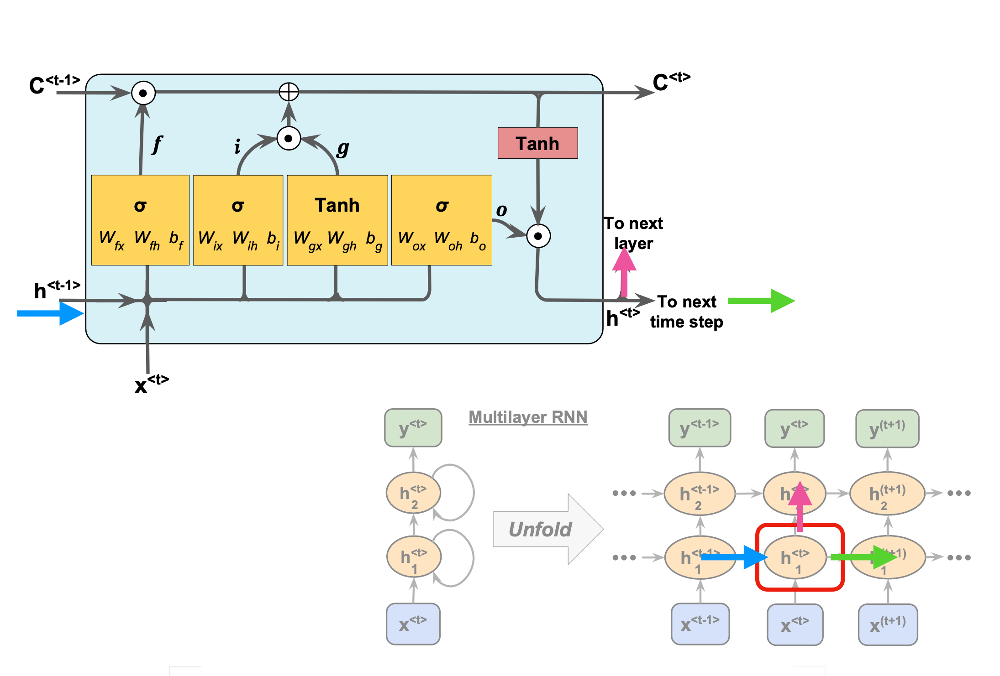
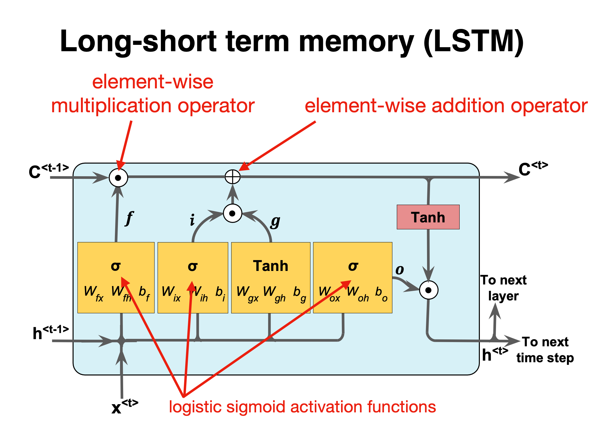
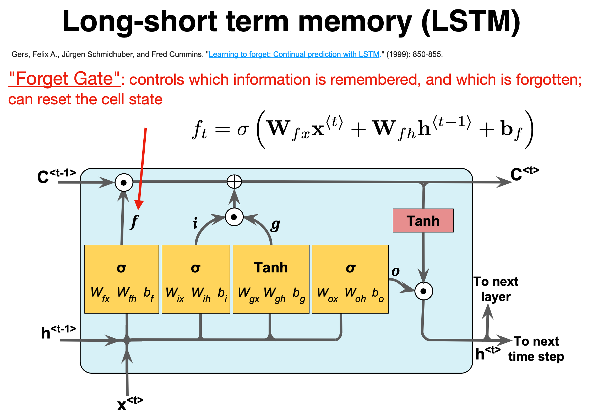

March 13-17: Advanced machine learning and data analysis for the physical sciences
March 13-17, 2023
Plans for the week March 13-17
- Summary of RNNs and discussion of Long-Short-Term memory with examples
- Discussion of Autoencoders
- Reading recommendations:
- For RNNs see Goodfellow et al chapter 10. See also chapter 11 and 12 on practicalities and applications
- Reading suggestions for implementation of RNNs: Aurelien Geron's chapter 14.
- Mathematics of autoencoders
Long Short Term Memory (LSTM)
LSTM uses a memory cell for modeling long-range dependencies and avoid vanishing gradient problems.
- Introduced by Hochreiter and Schmidhuber (1997) who solved the problem of getting an RNN to remember things for a long time (like hundreds of time steps).
- They designed a memory cell using logistic and linear units with multiplicative interactions.
- Information gets into the cell whenever its “write” gate is on.
- The information stays in the cell so long as its keep gate is on.
- Information can be read from the cell by turning on its read gate.
Implementing a memory cell in a neural network
To preserve information for a long time in the activities of an RNN, we use a circuit that implements an analog memory cell.
- A linear unit that has a self-link with a weight of 1 will maintain its state.
- Information is stored in the cell by activating its write gate.
- Information is retrieved by activating the read gate.
- We can backpropagate through this circuit because logistics are have nice derivatives.








An extrapolation example
The following code provides an example of how recurrent neural networks can be used to extrapolate to unknown values of physics data sets. Specifically, the data sets used in this program come from a quantum mechanical many-body calculation of energies as functions of the number of particles.
# For matrices and calculations
import numpy as np
# For machine learning (backend for keras)
import tensorflow as tf
# User-friendly machine learning library
# Front end for TensorFlow
import tensorflow.keras
# Different methods from Keras needed to create an RNN
# This is not necessary but it shortened function calls
# that need to be used in the code.
from tensorflow.keras import datasets, layers, models
from tensorflow.keras.layers import Input
from tensorflow.keras import regularizers
from tensorflow.keras.models import Model, Sequential
from tensorflow.keras.layers import Dense, SimpleRNN, LSTM, GRU
# For timing the code
from timeit import default_timer as timer
# For plotting
import matplotlib.pyplot as plt
# The data set
datatype='VaryDimension'
X_tot = np.arange(2, 42, 2)
y_tot = np.array([-0.03077640549, -0.08336233266, -0.1446729567, -0.2116753732, -0.2830637392, -0.3581341341, -0.436462435, -0.5177783846,
-0.6019067271, -0.6887363571, -0.7782028952, -0.8702784034, -0.9649652536, -1.062292565, -1.16231451,
-1.265109911, -1.370782966, -1.479465113, -1.591317992, -1.70653767])
Formatting the Data
The way the recurrent neural networks are trained in this program differs from how machine learning algorithms are usually trained. Typically a machine learning algorithm is trained by learning the relationship between the x data and the y data. In this program, the recurrent neural network will be trained to recognize the relationship in a sequence of y values. This is type of data formatting is typically used time series forcasting, but it can also be used in any extrapolation (time series forecasting is just a specific type of extrapolation along the time axis). This method of data formatting does not use the x data and assumes that the y data are evenly spaced.
For a standard machine learning algorithm, the training data has the form of (x,y) so the machine learning algorithm learns to assiciate a y value with a given x value. This is useful when the test data has x values within the same range as the training data. However, for this application, the x values of the test data are outside of the x values of the training data and the traditional method of training a machine learning algorithm does not work as well. For this reason, the recurrent neural network is trained on sequences of y values of the form ((y1, y2), y3), so that the network is concerned with learning the pattern of the y data and not the relation between the x and y data. As long as the pattern of y data outside of the training region stays relatively stable compared to what was inside the training region, this method of training can produce accurate extrapolations to y values far removed from the training data set.
# FORMAT_DATA
def format_data(data, length_of_sequence = 2):
"""
Inputs:
data(a numpy array): the data that will be the inputs to the recurrent neural
network
length_of_sequence (an int): the number of elements in one iteration of the
sequence patter. For a function approximator use length_of_sequence = 2.
Returns:
rnn_input (a 3D numpy array): the input data for the recurrent neural network. Its
dimensions are length of data - length of sequence, length of sequence,
dimnsion of data
rnn_output (a numpy array): the training data for the neural network
Formats data to be used in a recurrent neural network.
"""
X, Y = [], []
for i in range(len(data)-length_of_sequence):
# Get the next length_of_sequence elements
a = data[i:i+length_of_sequence]
# Get the element that immediately follows that
b = data[i+length_of_sequence]
# Reshape so that each data point is contained in its own array
a = np.reshape (a, (len(a), 1))
X.append(a)
Y.append(b)
rnn_input = np.array(X)
rnn_output = np.array(Y)
return rnn_input, rnn_output
# ## Defining the Recurrent Neural Network Using Keras
#
# The following method defines a simple recurrent neural network in keras consisting of one input layer, one hidden layer, and one output layer.
def rnn(length_of_sequences, batch_size = None, stateful = False):
"""
Inputs:
length_of_sequences (an int): the number of y values in "x data". This is determined
when the data is formatted
batch_size (an int): Default value is None. See Keras documentation of SimpleRNN.
stateful (a boolean): Default value is False. See Keras documentation of SimpleRNN.
Returns:
model (a Keras model): The recurrent neural network that is built and compiled by this
method
Builds and compiles a recurrent neural network with one hidden layer and returns the model.
"""
# Number of neurons in the input and output layers
in_out_neurons = 1
# Number of neurons in the hidden layer
hidden_neurons = 200
# Define the input layer
inp = Input(batch_shape=(batch_size,
length_of_sequences,
in_out_neurons))
# Define the hidden layer as a simple RNN layer with a set number of neurons and add it to
# the network immediately after the input layer
rnn = SimpleRNN(hidden_neurons,
return_sequences=False,
stateful = stateful,
name="RNN")(inp)
# Define the output layer as a dense neural network layer (standard neural network layer)
#and add it to the network immediately after the hidden layer.
dens = Dense(in_out_neurons,name="dense")(rnn)
# Create the machine learning model starting with the input layer and ending with the
# output layer
model = Model(inputs=[inp],outputs=[dens])
# Compile the machine learning model using the mean squared error function as the loss
# function and an Adams optimizer.
model.compile(loss="mean_squared_error", optimizer="adam")
return model
Predicting New Points With A Trained Recurrent Neural Network
def test_rnn (x1, y_test, plot_min, plot_max):
"""
Inputs:
x1 (a list or numpy array): The complete x component of the data set
y_test (a list or numpy array): The complete y component of the data set
plot_min (an int or float): the smallest x value used in the training data
plot_max (an int or float): the largest x valye used in the training data
Returns:
None.
Uses a trained recurrent neural network model to predict future points in the
series. Computes the MSE of the predicted data set from the true data set, saves
the predicted data set to a csv file, and plots the predicted and true data sets w
while also displaying the data range used for training.
"""
# Add the training data as the first dim points in the predicted data array as these
# are known values.
y_pred = y_test[:dim].tolist()
# Generate the first input to the trained recurrent neural network using the last two
# points of the training data. Based on how the network was trained this means that it
# will predict the first point in the data set after the training data. All of the
# brackets are necessary for Tensorflow.
next_input = np.array([[[y_test[dim-2]], [y_test[dim-1]]]])
# Save the very last point in the training data set. This will be used later.
last = [y_test[dim-1]]
# Iterate until the complete data set is created.
for i in range (dim, len(y_test)):
# Predict the next point in the data set using the previous two points.
next = model.predict(next_input)
# Append just the number of the predicted data set
y_pred.append(next[0][0])
# Create the input that will be used to predict the next data point in the data set.
next_input = np.array([[last, next[0]]], dtype=np.float64)
last = next
# Print the mean squared error between the known data set and the predicted data set.
print('MSE: ', np.square(np.subtract(y_test, y_pred)).mean())
# Save the predicted data set as a csv file for later use
name = datatype + 'Predicted'+str(dim)+'.csv'
np.savetxt(name, y_pred, delimiter=',')
# Plot the known data set and the predicted data set. The red box represents the region that was used
# for the training data.
fig, ax = plt.subplots()
ax.plot(x1, y_test, label="true", linewidth=3)
ax.plot(x1, y_pred, 'g-.',label="predicted", linewidth=4)
ax.legend()
# Created a red region to represent the points used in the training data.
ax.axvspan(plot_min, plot_max, alpha=0.25, color='red')
plt.show()
# Check to make sure the data set is complete
assert len(X_tot) == len(y_tot)
# This is the number of points that will be used in as the training data
dim=12
# Separate the training data from the whole data set
X_train = X_tot[:dim]
y_train = y_tot[:dim]
# Generate the training data for the RNN, using a sequence of 2
rnn_input, rnn_training = format_data(y_train, 2)
# Create a recurrent neural network in Keras and produce a summary of the
# machine learning model
model = rnn(length_of_sequences = rnn_input.shape[1])
model.summary()
# Start the timer. Want to time training+testing
start = timer()
# Fit the model using the training data genenerated above using 150 training iterations and a 5%
# validation split. Setting verbose to True prints information about each training iteration.
hist = model.fit(rnn_input, rnn_training, batch_size=None, epochs=150,
verbose=True,validation_split=0.05)
for label in ["loss","val_loss"]:
plt.plot(hist.history[label],label=label)
plt.ylabel("loss")
plt.xlabel("epoch")
plt.title("The final validation loss: {}".format(hist.history["val_loss"][-1]))
plt.legend()
plt.show()
# Use the trained neural network to predict more points of the data set
test_rnn(X_tot, y_tot, X_tot[0], X_tot[dim-1])
# Stop the timer and calculate the total time needed.
end = timer()
print('Time: ', end-start)
Other Things to Try
Changing the size of the recurrent neural network and its parameters can drastically change the results you get from the model. The below code takes the simple recurrent neural network from above and adds a second hidden layer, changes the number of neurons in the hidden layer, and explicitly declares the activation function of the hidden layers to be a sigmoid function. The loss function and optimizer can also be changed but are kept the same as the above network. These parameters can be tuned to provide the optimal result from the network. For some ideas on how to improve the performance of a recurrent neural network.
def rnn_2layers(length_of_sequences, batch_size = None, stateful = False):
"""
Inputs:
length_of_sequences (an int): the number of y values in "x data". This is determined
when the data is formatted
batch_size (an int): Default value is None. See Keras documentation of SimpleRNN.
stateful (a boolean): Default value is False. See Keras documentation of SimpleRNN.
Returns:
model (a Keras model): The recurrent neural network that is built and compiled by this
method
Builds and compiles a recurrent neural network with two hidden layers and returns the model.
"""
# Number of neurons in the input and output layers
in_out_neurons = 1
# Number of neurons in the hidden layer, increased from the first network
hidden_neurons = 500
# Define the input layer
inp = Input(batch_shape=(batch_size,
length_of_sequences,
in_out_neurons))
# Create two hidden layers instead of one hidden layer. Explicitly set the activation
# function to be the sigmoid function (the default value is hyperbolic tangent)
rnn1 = SimpleRNN(hidden_neurons,
return_sequences=True, # This needs to be True if another hidden layer is to follow
stateful = stateful, activation = 'sigmoid',
name="RNN1")(inp)
rnn2 = SimpleRNN(hidden_neurons,
return_sequences=False, activation = 'sigmoid',
stateful = stateful,
name="RNN2")(rnn1)
# Define the output layer as a dense neural network layer (standard neural network layer)
#and add it to the network immediately after the hidden layer.
dens = Dense(in_out_neurons,name="dense")(rnn2)
# Create the machine learning model starting with the input layer and ending with the
# output layer
model = Model(inputs=[inp],outputs=[dens])
# Compile the machine learning model using the mean squared error function as the loss
# function and an Adams optimizer.
model.compile(loss="mean_squared_error", optimizer="adam")
return model
# Check to make sure the data set is complete
assert len(X_tot) == len(y_tot)
# This is the number of points that will be used in as the training data
dim=12
# Separate the training data from the whole data set
X_train = X_tot[:dim]
y_train = y_tot[:dim]
# Generate the training data for the RNN, using a sequence of 2
rnn_input, rnn_training = format_data(y_train, 2)
# Create a recurrent neural network in Keras and produce a summary of the
# machine learning model
model = rnn_2layers(length_of_sequences = 2)
model.summary()
# Start the timer. Want to time training+testing
start = timer()
# Fit the model using the training data genenerated above using 150 training iterations and a 5%
# validation split. Setting verbose to True prints information about each training iteration.
hist = model.fit(rnn_input, rnn_training, batch_size=None, epochs=150,
verbose=True,validation_split=0.05)
# This section plots the training loss and the validation loss as a function of training iteration.
# This is not required for analyzing the couple cluster data but can help determine if the network is
# being overtrained.
for label in ["loss","val_loss"]:
plt.plot(hist.history[label],label=label)
plt.ylabel("loss")
plt.xlabel("epoch")
plt.title("The final validation loss: {}".format(hist.history["val_loss"][-1]))
plt.legend()
plt.show()
# Use the trained neural network to predict more points of the data set
test_rnn(X_tot, y_tot, X_tot[0], X_tot[dim-1])
# Stop the timer and calculate the total time needed.
end = timer()
print('Time: ', end-start)
Other Types of Recurrent Neural Networks
Besides a simple recurrent neural network layer, there are two other commonly used types of recurrent neural network layers: Long Short Term Memory (LSTM) and Gated Recurrent Unit (GRU). For a short introduction to these layers see https://medium.com/mindboard/lstm-vs-gru-experimental-comparison-955820c21e8b and https://medium.com/mindboard/lstm-vs-gru-experimental-comparison-955820c21e8b.
The first network created below is similar to the previous network, but it replaces the SimpleRNN layers with LSTM layers. The second network below has two hidden layers made up of GRUs, which are preceeded by two dense (feeddorward) neural network layers. These dense layers "preprocess" the data before it reaches the recurrent layers. This architecture has been shown to improve the performance of recurrent neural networks (see the link above and also https://arxiv.org/pdf/1807.02857.pdf.
def lstm_2layers(length_of_sequences, batch_size = None, stateful = False):
"""
Inputs:
length_of_sequences (an int): the number of y values in "x data". This is determined
when the data is formatted
batch_size (an int): Default value is None. See Keras documentation of SimpleRNN.
stateful (a boolean): Default value is False. See Keras documentation of SimpleRNN.
Returns:
model (a Keras model): The recurrent neural network that is built and compiled by this
method
Builds and compiles a recurrent neural network with two LSTM hidden layers and returns the model.
"""
# Number of neurons on the input/output layer and the number of neurons in the hidden layer
in_out_neurons = 1
hidden_neurons = 250
# Input Layer
inp = Input(batch_shape=(batch_size,
length_of_sequences,
in_out_neurons))
# Hidden layers (in this case they are LSTM layers instead if SimpleRNN layers)
rnn= LSTM(hidden_neurons,
return_sequences=True,
stateful = stateful,
name="RNN", use_bias=True, activation='tanh')(inp)
rnn1 = LSTM(hidden_neurons,
return_sequences=False,
stateful = stateful,
name="RNN1", use_bias=True, activation='tanh')(rnn)
# Output layer
dens = Dense(in_out_neurons,name="dense")(rnn1)
# Define the midel
model = Model(inputs=[inp],outputs=[dens])
# Compile the model
model.compile(loss='mean_squared_error', optimizer='adam')
# Return the model
return model
def dnn2_gru2(length_of_sequences, batch_size = None, stateful = False):
"""
Inputs:
length_of_sequences (an int): the number of y values in "x data". This is determined
when the data is formatted
batch_size (an int): Default value is None. See Keras documentation of SimpleRNN.
stateful (a boolean): Default value is False. See Keras documentation of SimpleRNN.
Returns:
model (a Keras model): The recurrent neural network that is built and compiled by this
method
Builds and compiles a recurrent neural network with four hidden layers (two dense followed by
two GRU layers) and returns the model.
"""
# Number of neurons on the input/output layers and hidden layers
in_out_neurons = 1
hidden_neurons = 250
# Input layer
inp = Input(batch_shape=(batch_size,
length_of_sequences,
in_out_neurons))
# Hidden Dense (feedforward) layers
dnn = Dense(hidden_neurons/2, activation='relu', name='dnn')(inp)
dnn1 = Dense(hidden_neurons/2, activation='relu', name='dnn1')(dnn)
# Hidden GRU layers
rnn1 = GRU(hidden_neurons,
return_sequences=True,
stateful = stateful,
name="RNN1", use_bias=True)(dnn1)
rnn = GRU(hidden_neurons,
return_sequences=False,
stateful = stateful,
name="RNN", use_bias=True)(rnn1)
# Output layer
dens = Dense(in_out_neurons,name="dense")(rnn)
# Define the model
model = Model(inputs=[inp],outputs=[dens])
# Compile the mdoel
model.compile(loss='mean_squared_error', optimizer='adam')
# Return the model
return model
# Check to make sure the data set is complete
assert len(X_tot) == len(y_tot)
# This is the number of points that will be used in as the training data
dim=12
# Separate the training data from the whole data set
X_train = X_tot[:dim]
y_train = y_tot[:dim]
# Generate the training data for the RNN, using a sequence of 2
rnn_input, rnn_training = format_data(y_train, 2)
# Create a recurrent neural network in Keras and produce a summary of the
# machine learning model
# Change the method name to reflect which network you want to use
model = dnn2_gru2(length_of_sequences = 2)
model.summary()
# Start the timer. Want to time training+testing
start = timer()
# Fit the model using the training data genenerated above using 150 training iterations and a 5%
# validation split. Setting verbose to True prints information about each training iteration.
hist = model.fit(rnn_input, rnn_training, batch_size=None, epochs=150,
verbose=True,validation_split=0.05)
# This section plots the training loss and the validation loss as a function of training iteration.
# This is not required for analyzing the couple cluster data but can help determine if the network is
# being overtrained.
for label in ["loss","val_loss"]:
plt.plot(hist.history[label],label=label)
plt.ylabel("loss")
plt.xlabel("epoch")
plt.title("The final validation loss: {}".format(hist.history["val_loss"][-1]))
plt.legend()
plt.show()
# Use the trained neural network to predict more points of the data set
test_rnn(X_tot, y_tot, X_tot[0], X_tot[dim-1])
# Stop the timer and calculate the total time needed.
end = timer()
print('Time: ', end-start)
# ### Training Recurrent Neural Networks in the Standard Way (i.e. learning the relationship between the X and Y data)
#
# Finally, comparing the performace of a recurrent neural network using the standard data formatting to the performance of the network with time sequence data formatting shows the benefit of this type of data formatting with extrapolation.
# Check to make sure the data set is complete
assert len(X_tot) == len(y_tot)
# This is the number of points that will be used in as the training data
dim=12
# Separate the training data from the whole data set
X_train = X_tot[:dim]
y_train = y_tot[:dim]
# Reshape the data for Keras specifications
X_train = X_train.reshape((dim, 1))
y_train = y_train.reshape((dim, 1))
# Create a recurrent neural network in Keras and produce a summary of the
# machine learning model
# Set the sequence length to 1 for regular data formatting
model = rnn(length_of_sequences = 1)
model.summary()
# Start the timer. Want to time training+testing
start = timer()
# Fit the model using the training data genenerated above using 150 training iterations and a 5%
# validation split. Setting verbose to True prints information about each training iteration.
hist = model.fit(X_train, y_train, batch_size=None, epochs=150,
verbose=True,validation_split=0.05)
# This section plots the training loss and the validation loss as a function of training iteration.
# This is not required for analyzing the couple cluster data but can help determine if the network is
# being overtrained.
for label in ["loss","val_loss"]:
plt.plot(hist.history[label],label=label)
plt.ylabel("loss")
plt.xlabel("epoch")
plt.title("The final validation loss: {}".format(hist.history["val_loss"][-1]))
plt.legend()
plt.show()
# Use the trained neural network to predict the remaining data points
X_pred = X_tot[dim:]
X_pred = X_pred.reshape((len(X_pred), 1))
y_model = model.predict(X_pred)
y_pred = np.concatenate((y_tot[:dim], y_model.flatten()))
# Plot the known data set and the predicted data set. The red box represents the region that was used
# for the training data.
fig, ax = plt.subplots()
ax.plot(X_tot, y_tot, label="true", linewidth=3)
ax.plot(X_tot, y_pred, 'g-.',label="predicted", linewidth=4)
ax.legend()
# Created a red region to represent the points used in the training data.
ax.axvspan(X_tot[0], X_tot[dim], alpha=0.25, color='red')
plt.show()
# Stop the timer and calculate the total time needed.
end = timer()
print('Time: ', end-start)
Autoencoders: Overarching view
Autoencoders are artificial neural networks capable of learning efficient representations of the input data (these representations are called codings) without any supervision (i.e., the training set is unlabeled). These codings typically have a much lower dimensionality than the input data, making autoencoders useful for dimensionality reduction.
More importantly, autoencoders act as powerful feature detectors, and they can be used for unsupervised pretraining of deep neural networks.
Lastly, they are capable of randomly generating new data that looks very similar to the training data; this is called a generative model. For example, you could train an autoencoder on pictures of faces, and it would then be able to generate new faces. Surprisingly, autoencoders work by simply learning to copy their inputs to their outputs. This may sound like a trivial task, but we will see that constraining the network in various ways can make it rather difficult. For example, you can limit the size of the internal representation, or you can add noise to the inputs and train the network to recover the original inputs. These constraints prevent the autoencoder from trivially copying the inputs directly to the outputs, which forces it to learn efficient ways of representing the data. In short, the codings are byproducts of the autoencoder’s attempt to learn the identity function under some constraints.